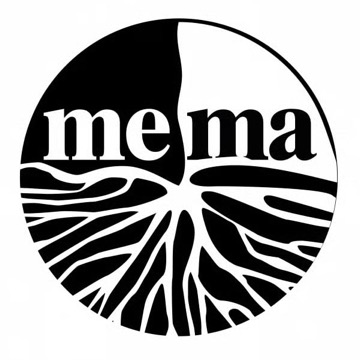

Il manifesto · MeMa
Candidati MeMa per
Manifestival 2026
Una raccolta dei prototipi sviluppati per il manifesto, in ordine di importanza.
Clicca sull'immagine o sul titolo per aprire la demo.

Una raccolta dei prototipi sviluppati per il manifesto, in ordine di importanza.
Clicca sull'immagine o sul titolo per aprire la demo.